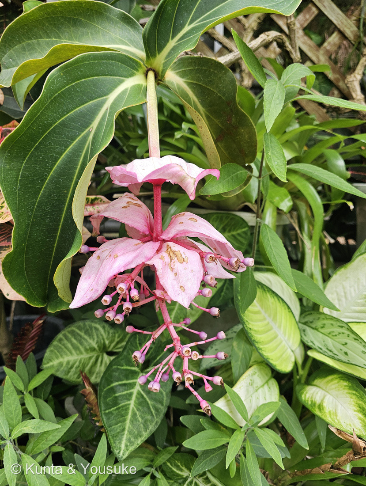
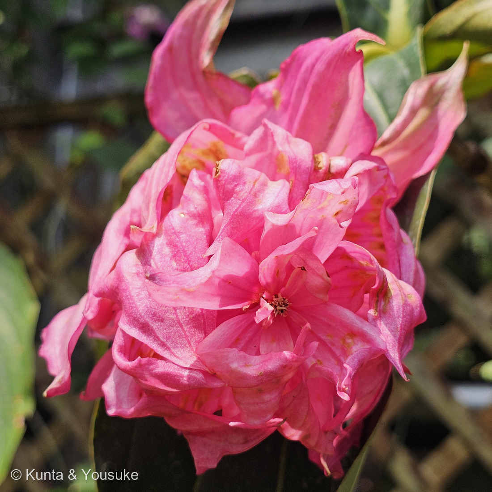
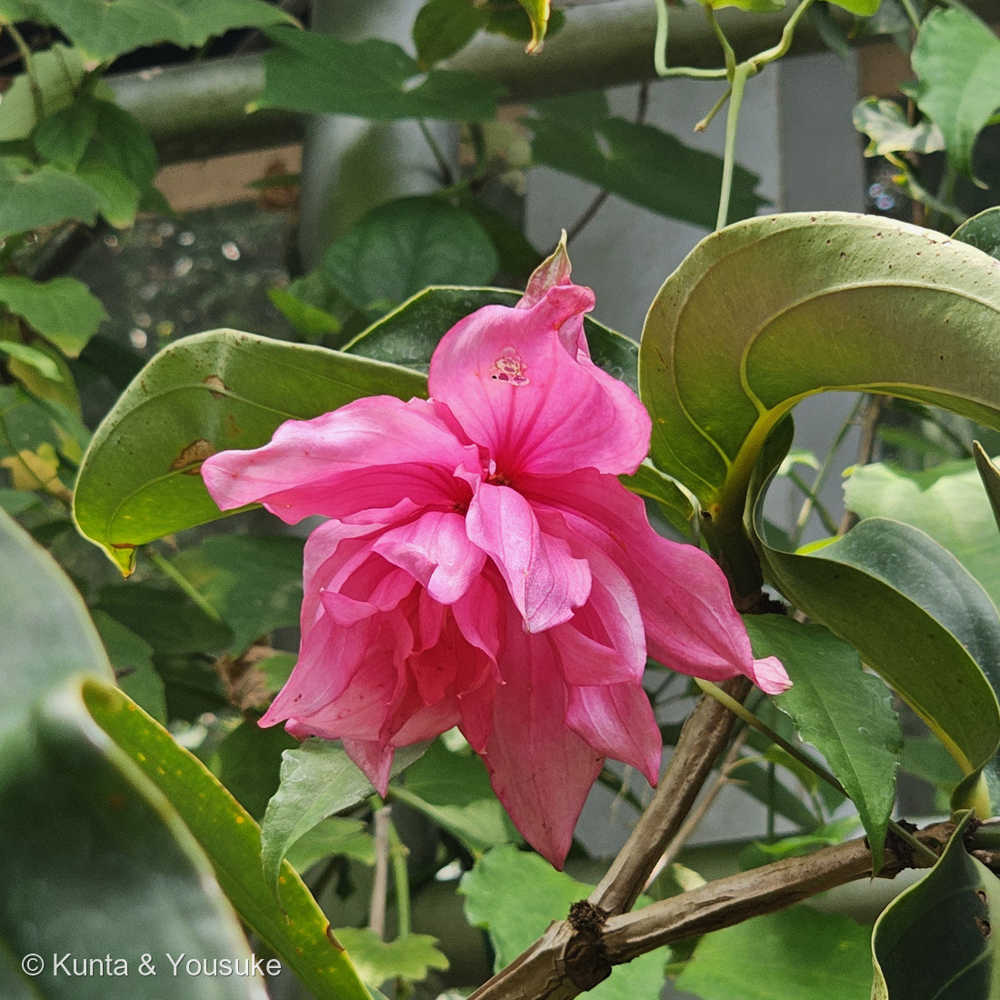
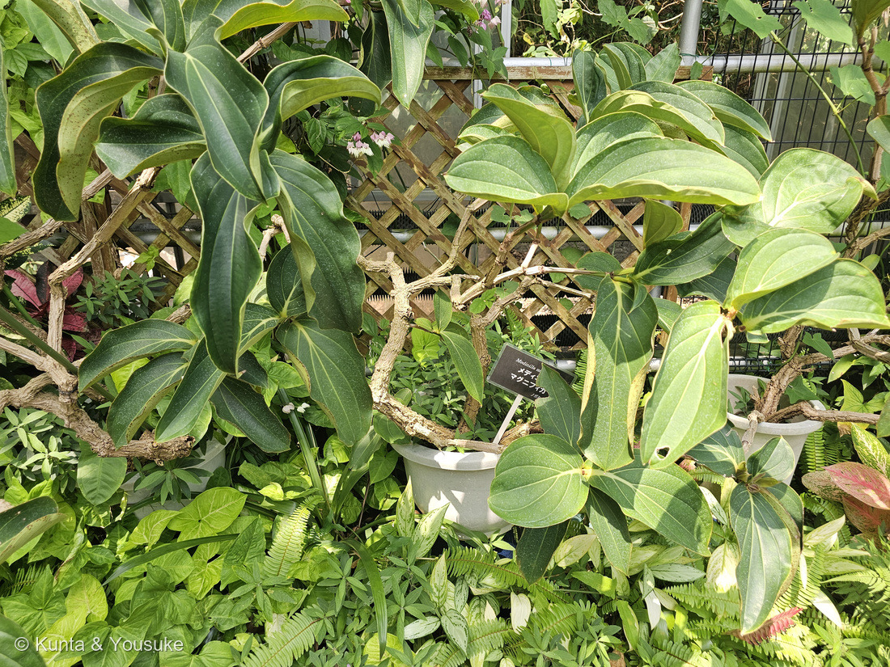
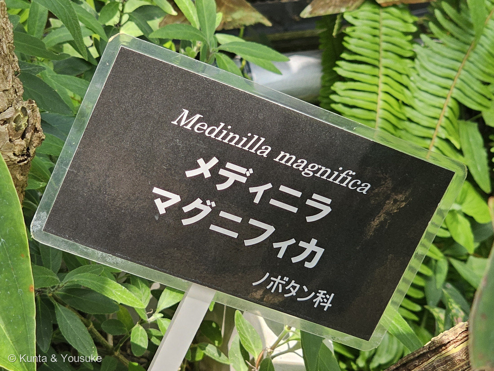

地図を読み込んでいるよ…
🔍 写真も地図も、押しているあいだ拡大して見られるよ（スマホは指を置いてすこし待ってね）。
🌍 の地図＝この子がもともと自生している場所を緑に。フィリピン。熱帯雨林の大きな木の股（また）にたまった落ち葉や苔の上に着生して育つ、常緑の低木（英語版Wikipedia「an epiphyte, a plant that grows on other trees but does not withdraw its food from those trees as parasites do」）。
⭐フィリピンだけの子だよ。英語版Wikipedia・牧野植物園・八丈植物公園・フラワーパークかごしま、どの出典も「フィリピン原産」の一言でそろっている＝⭐珍しく、迷いのない一国だけの緑だね。⭐⭐⭐でも、この緑のほんとうの意味は「国」ではなくて「高さ」にあるんだ＝この子は地面に生えていない＝「an epiphyte, a plant that grows on other trees but does not withdraw its food from those trees as parasites do」＝ほかの木に着生するけれど、寄生のように養分を吸いとりはしない（英語版Wikipedia）＝⭐「grows in tree forks among accumulated leaf debris and moss」＝大きな木の股にたまった落ち葉と苔の上で暮らす。⭐⭐だから地図をどれだけ拡大しても、この子のほんとうのすみかは映らない＝フィリピンの熱帯雨林の、地上から何メートルも上のところにいるよ。⭐日本は塗っていない＝ぼくらが会ったのは九十九島動植物園 森きららの温室＝⚠15℃より下がると育てられないので、日本の外では冬をこせないんだ。⭐⭐同じフトモモ目の仲間と、ふるさとをくらべてみて＝281 ブラシノキはオーストラリア、211 レンブは東南アジア、128 ザクロは西アジア、116 フクシアは中南米＝⭐フトモモ目は、世界じゅうの暖かいところに散らばった目なんだね。⭐⭐⭐そして、おまけのシコンノボタンはブラジル東南部＝地球の反対側＝⚠それでも同じノボタン科＝⭐ノボタン科は「熱帯・亜熱帯にだけ、とくに南アメリカに多い」科なので、この2つはその両はしにいる子どうしだよ。⭐日本のノボタン科は、南西諸島と小笠原諸島に4属7種だけ＝本州にはいない。
⚠ 地図は国（日本と中国だけ県・省）までしか塗れないから、ほんとうの分布より広く見えていることがあるよ。地図はだいたいの場所。正確なところは、上の文を見てね。
メディニラ・マグニフィカ
Medinilla magnifica Lindl.
別名 オオバヤドリノボタン（大葉宿野牡丹）／英名 rose grape（バラのブドウ）・showy medinilla
ノボタン科 · Melastomataceae（ヤドリノボタン属 Medinilla・フトモモ目 Myrtales）── ⭐⭐⭐⭐⭐図鑑ではじめてのノボタン科＝110科目／⭐同じフトモモ目の仲間＝110 サルスベリ・128 ザクロ・257 シマサルスベリ・081 メマツヨイグサ・116 フクシア・172 アカバナユウゲショウ・211 レンブ・281 ブラシノキ
燻太さんの言葉「茎が縦方向に木質化して角ばっているね。特徴的なピンクの花は、苞葉と咲き終わった花序に分かれているみたい。」「八重咲きのムクゲみたいな花序もあるけど、どうしてこんなに姿が違うのだろう？」── ⭐⭐答え＝ぜんぶ同じ花序の、時間ちがい。そして「角ばった茎」は、ノボタン科の目じるしだったよ
⭐⭐⭐⭐⭐ 燻太さんの質問 ── 「どうしてこんなに姿が違うのだろう？」
- ⭐⭐⭐⭐⭐答え＝ぜんぶ、同じ花序の「時間ちがい」だよ。──ピンクに見えているのは、どれも苞（ほう）と、その中の花。器官がちがうのではなくて、進みぐあいがちがうんだ。
- ⭐⭐⭐⭐この子の花序は、こういう順番で変わる。──①つぼみのとき＝大きなピンクの苞が、ブドウの房のような蕾のかたまりを包んでいる（苞が何段も重なるので、まるい塊にふくらむ）／②苞が開く＝「大きな苞葉が開いて中のブドウの粒のような蕾が見えてきた」（栽培記録・4月10日）＝傘というより、パラシュートのように反り返る／③花軸が伸びる＝中から房が下がってきて、「花は順に先端に向かって咲いていくので、1つの房が1ヶ月ほど観賞できる」（フラワーパークかごしま）＝⚠一つ一つの花は一日花で、翌日には落ちる／④実になる＝直径1cmほどのすみれ色の液果になり、「花が終わると自然に苞葉の茎も付け根から取れる」（栽培記録）
- ⭐⭐⭐⭐だから、写真はこう並んでいるよ。──⭐写真②の「八重咲きのムクゲ」＝1〜2の段階（花軸がまだ伸びていないから、苞が重なって球に見える）／⭐写真③＝2の段階（外側の苞がパラシュートのように開いて、中にまだ塊がのこっている）／⭐⭐写真①＝3〜4の段階（軸が伸びきって、苞は離れて反り、その先に房がぶら下がっている）
- ⭐⭐⭐⭐⭐そして、燻太さんの「咲き終わった花序」という見立ては当たっていた。──写真①を大きくすると、ぶら下がっている丸い粒は、つぼみではなく若い実だった。⭐てっぺんに萼（がく）の輪っかがぽっかり開いていて、その真ん中に、茶色く枯れた雄しべや花びらの残りがくっついている。⚠つぼみなら、先はとがっていて閉じているはずなんだ。
- ⭐⭐⭐⭐⭐つまり、この一株の上に「つぼみ・開いたところ・実」の三つの時間が、同時にならんでいた。──⭐⭐47秒のあいだに撮った5枚が、そのままこの子の一生の早送りになっていたんだね。
- ⚠⚠ただし、正直に書いておくね。──写真②③の内側にぎっしり詰まっているピンクが、「もっと小さい内側の苞」なのか「まだ軸が伸びていない、密に集まった花」なのかは、ぼくには決めきれなかった。⭐写真②のまんなかには、雄しべの束を持つ花がひとつ、はっきり見えている。⚠でも、もし全部が花なら、雄しべの束はもっとたくさん見えるはず。だから「苞が主で、花がのぞきはじめたところ」と読んだよ。⭐次に会ったら、真横から見て「ひとつひとつに花柄があるか」を見れば決まる。宿題にしておくね。
⭐⭐⭐⭐ 名前と学名の由来 ── 「めざましい」と、木に宿るもの
- ⭐属名 Medinilla は、人の名前。──ホセ・デ・メディニリャ・イ・ピネダ（José de Medinilla y Pineda）という、1812〜1822年にマリアナ諸島の総督だった人にちなむ。⚠英語版Wikipediaは「governor of Mauritius (then known as the Marianne Islands)」＝モーリシャスの総督、と書いているけれど、モーリシャスとマリアナ諸島は別の場所なので、ここは混ざっていると思う（ほかの出典はどれもマリアナ諸島とする）。
- ⭐⭐種小名 magnifica は、ラテン語で「壮大な・見事な・すばらしい」。──magnus（大きい）＋ facere（作る）＝「大きく作られたもの」で、英語の magnificent と同じ言葉だよ。⭐⭐この属には約300種もあるのに、「これこそ見事なもの」という名前をもらったのが、この子。
- ⭐⭐⭐属の和名は「ヤドリノボタン属」（宿り野牡丹）。──⭐「宿る」＝ほかの木に着生して暮らすから。⭐そして種の和名は「オオバヤドリノボタン（大葉宿野牡丹）」＝葉が大きいヤドリノボタン。⭐⭐学名は人の名前だけれど、和名はちゃんと「この子がどう暮らしているか」を言っているんだ。
- ⭐⭐⭐⭐科名 Melastomataceae（ノボタン科）の由来が、いちばんおもしろい。──属名 Melastoma から来ていて、ギリシャ語の μέλας（melas）＝「黒い」＋ στόμα（stoma）＝「口」。⭐この科のいくつかの種は、実を食べると口や唇が黒く染まるんだ。⭐⭐とくに子どもが食べて口を真っ黒にすることから、この名前になったと書かれているよ。
- ⭐和名の「野牡丹（ノボタン）」は、日本に自生する仲間の名前から。──牡丹のように立派な花が、野に咲くということだね。
⭐⭐⭐⭐ この植物のこと ── 木の股で暮らす低木
- ⭐⭐フィリピンの熱帯雨林で、大きな木の股（また）にたまった落ち葉や苔の上に根をおろして育つ、着生の常緑低木だよ。──⭐「着生」は、木の上で暮らすけれど、その木から養分をとらない暮らしかた（寄生とはちがう）。高さは3mまでになる。
- ⭐⭐⭐この図鑑の「着生の仲間」が、また増えたね。──249 ビカクシダ（シダ）・278 ヒドノフィツム・フォルミカルム（アリと暮らす）・282 シマオオタニワタリ（シダ）・236 ネオレゲリア（パイナップルの仲間）・266 バニラ（ラン）。⭐科も姿もばらばらなのに、みんな「木の上」を選んだ子たちだよ。
- ⭐葉は対生。革質でかたく、長さ20〜30cm。──⭐⭐そして縦に3〜5本の太い脈が走る＝これがノボタン科の目じるし。⭐単子葉植物の平行脈のように見えるけれど、ちゃんと双子葉植物だよ。（写真④で、はっきり見える）
- ⭐花序は頂生で下がる円錐花序、長さ27〜35（〜40）cm。太くて多肉質の花序柄が10〜15（〜18）cm。──⭐苞は6〜8（〜10）cm × 4〜5cmで、下のほうは対生、上のほうは輪生につき、咲き終わっても落ちずに残る（宿存性）。⭐二次枝は4本ずつ輪生し、小花柄は5〜10mm。
- ⭐花は直径2〜2.5cm、ピンク〜赤〜すみれ色。──⭐⭐ノボタン科の花は、雄しべが花弁の2倍あるのがきまりだよ。
- ⭐⭐寒さに弱い＝15℃より下がると育てられない。──だから日本では、温室か、大きな鉢の観葉植物として楽しむ子。
- ⭐⭐⭐イギリス王立園芸協会（RHS）のガーデンメリット賞をもらっている。──⭐⭐そして、ベルギー国王ボードゥアンが王室の温室でこの子を育てていて、ベルギーの紙幣にも描かれたことがあるんだって。⭐フィリピンの木の上の子が、ヨーロッパのお札になったんだね。
⭐⭐⭐ 同定について ── 名札があるから確定。でも「科の見わけ」を覚えよう
- ⭐⭐⭐⭐名札があるので、この子は確定（「Medinilla magnifica ／ メディニラ マグニフィカ ／ ノボタン科」）。──⭐だからここは、「次にノボタン科に会ったとき、どう気づくか」の練習にするね。
- ⭐⭐⭐⭐⭐ノボタン科の目じるしは3つ。──①葉に、縦の脈が3〜9本走る＝ふつうの双子葉植物は、まんなかの主脈から羽のように枝分かれする（羽状脈）けれど、ノボタン科は葉のつけねから先まで、太い脈が何本も縦に走る／②若い枝の断面が四角い／③雄しべが花弁の2倍あって、しかも形が変わっている
- ⭐⭐⭐②は、燻太さんが先に気づいてくれたところだよ。──「茎が縦方向に木質化して角ばっているね」＝これがまさに、その目じるし。⚠ただし写真の枝はもう木になっているので、四角とは言いきれなかった＝縦の稜が残っているところまでが、ぼくに言えること。宿題にしたよ。
- ⭐この3つは、「科」までを決める道具。──⚠種まで決めるには、この子の場合は「大きなピンクの苞」が要る。⚠⚠でも園芸には M. miniata 系の交配種（'ヒノトリ'など）もあるから、名札なしでは、ぼくは決めきれなかったと思う。
- ⚠似ていて、ちがう子＝ムクゲやフヨウ（アオイ科）。──燻太さんが「八重咲きのムクゲみたい」と言ったとおり見た目は似るけれど、⭐アオイ科は雄しべが1本の柱に合体している（単体雄蕊）ので、まんなかを見れば一発でちがう。⭐そして、あちらは「1つの花」、こちらは「たくさんの花＋苞の集まり」だよ。
⭐⭐⭐⭐⭐ 110科目 ── ノボタン科という、大きくて遠い科
- ⭐⭐⭐⭐⭐この子で、図鑑の科が110になった。──⭐300件目の300 タチツボスミレは科を増やさなかったので、301で1つ増えたことになるね。
- ⭐⭐ノボタン科は、約180属5,150種の大きな科。──⭐ほとんどが熱帯・亜熱帯にだけ分布していて、とくに南アメリカに多い。
- ⭐⭐⭐日本にも、ちゃんといるよ。──4属7種が、南西諸島と小笠原諸島に自生している（ノボタン／ムニンノボタン／ハシカンボク／ヒメノボタン など）。⚠でも本州にはいない＝⭐だから燻太さんが本州で会うとすれば、園芸で植えられたおまけのシコンノボタンか、温室のこの子、ということになるね。
- ⭐フトモモ目（Myrtales）の一員で、図鑑にはもう仲間がたくさんいる。──110 サルスベリ・128 ザクロ・257 シマサルスベリ（ミソハギ科）／081 メマツヨイグサ・116 フクシア・172 アカバナユウゲショウ（アカバナ科）／211 レンブ・281 ブラシノキ（フトモモ科）。
- ⭐⭐⭐そして、この目には「雄しべを見せる花」が多いんだ。──ブラシノキは雄しべがブラシになり、フクシアは雄しべを長く垂らし、シコンノボタンは長短の雄しべを蜘蛛の足のように広げる。⭐メディニラも、花の中に雄しべの束を見せているよ。
出典：フラワーパークかごしま「メディニラ・マグニフィカ」（花序は長さ30cm程で、長さ10cm程のピンク色の苞と呼ばれる覆いが数枚付いており、その下に2cm程の球形の小花が房になってたくさん付きます／花色はコーラルピンクで、花は順に先端に向かって咲いていくので、1つの房が1ヶ月ほど観賞できます／ノボタン科／フィリピン原産／密閉温室で通年）／高知県立牧野植物園 見ごろの植物「メディニラ・マグニフィカ」（Medinilla magnifica Lindl.／フィリピン原産／濃いピンク色の花を咲かせ、房状の花序の基部に大きな色づいたピンク色の苞がつく／花期4月下旬／ノボタン科／K温室）／東京都八丈植物公園「メディニラ・マグニフィカ」（ピンク色の大きな苞〈葉が変化したもの〉の下に濃桃色の花を房状に付けます／フィリピン）／英語版Wikipedia「Medinilla magnifica」（up to 3 m tall, with opposite, firm, leathery leaves, which grow to 20–30 cm long／panicles up to 50 cm long featuring ovid pink bracts／individual blooms reaching 25 mm／fruits are violet, fleshy berries, about 1 cm wide／an epiphyte, a plant that grows on other trees but does not withdraw its food from those trees as parasites do／grows in tree forks among accumulated leaf debris and moss／cannot tolerate temperatures below 15 °C／Award of Garden Merit／King Baudouin of Belgium／Magnifica means 'magnificent'）／PIER（Pacific Island Ecosystems at Risk）による記載（inflorescences terminal, many-flowered, pendulous, pink panicles 27–35〈-40〉cm long／peduncles 10–15〈-18〉cm long／bracts spreading, elliptic-ovate, 60–80〈-100〉mm long, 40–50 mm wide, reticulately veined, paired at the proximal end, whorled at the distal end, pink, persistent／secondary branches in whorls of 4／pedicels 5–10 mm long）／日本語版Wikipedia「ヤドリノボタン属」（旧熱帯で300種に分化／M. magnifica＝オオバヤドリノボタン、フィリピン／葉は卵形で輪生〜対生、無毛、長さ10–30 cmと大きく／長さ30 cmの大きな円錐花序を下垂させる）／日本語版Wikipedia「ノボタン科」（約180の属と5,150種／ほぼ全て熱帯・亜熱帯／特に南米に多い／日本では4属7種が南西諸島や小笠原諸島に分布／葉は対生／萼片と花弁が通常4〜5枚に対して雄蕊はその2倍ある）／三河の植物観察「シコンノボタン Tibouchina urvilleana」（ブラジル東南部原産／花期7〜11月／直径5〜7.5〈しばしば8〜13〉cm／雄しべははっきり不等長、5長、5短／長い雄しべの葯は紫色、短い雄しべはやや淡色／花糸はモーブ色〈藤色〉、短毛がある／縦の〈3〜〉5〈〜7〉脈があり、細脈は羽状／若枝は四角形、綿毛があり、しばしば角に赤色の毛がある）／Melastoma の語源＝ギリシャ語 μέλας（melas）＝黒い ＋ στόμα（stoma）＝口。実を食べると口や唇が黒く染まることから（Flora of North America ほか）／みんなの趣味の園芸 そだレポ「メディニラ・マグニフィカの豪華な花を見てみたい」（ブドウの房状に蕾が包まれている／4月10日「大きな苞葉が開いて中のブドウの粒のような蕾が見えてきた」／4月20日から開花／各房の中の沢山ある蕾が次々と開花していく／一つ一つの花は一日花のようで翌日には自然に落ちています／花が終わると自然に苞葉の茎も付け根から取れる）。⭐撮影時刻は、燻太さんの原本のEXIFから読んだよ（⚠公開画像はEXIFを落としてある）。